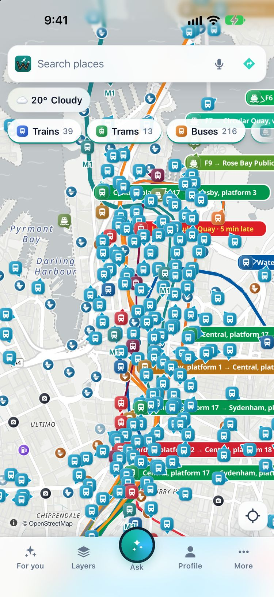

Wayaroo 根据新南威尔士州交通局（Transport for NSW）的开放数据，在地图上显示行驶中的悉尼火车（Sydney Trains）、悉尼地铁（Sydney Metro）、公交、渡轮和轻轨。点击任意一辆车，即可查看它的线路、开往哪里、晚点多少以及接下来停靠的站点。
免费，无需注册账户，在浏览器中打开。

2026年11月13日（星期五）墨尔本时间上午9:00，Wayaroo 在悉尼的地图上共显示了 2,345 辆车（火车和地铁列车 237、公交车 2,067、渡轮 24、轻轨列车 17）。
| 类型 | 当时的车辆数 |
|---|---|
| 火车和地铁列车 | 237 |
| 公交车 | 2,067 |
| 渡轮 | 24 |
| 轻轨列车 | 17 |
新南威尔士州的数据不只覆盖悉尼。同一时间，Wayaroo 在纽卡斯尔（Newcastle）显示了 132 辆车，在卧龙岗（Wollongong）显示了 83 辆。
车辆数在一天中会变化。数据来源：新南威尔士州交通局开放数据中心（Transport for NSW Open Data Hub，CC BY 4.0）。
新南威尔士州的行程来自新南威尔士州交通局自己的行程规划（Trip Planner），带有实时时间。Wayaroo 另外估算 Opal 票价（高峰或非高峰，含换乘优惠和每日封顶），并显示每次换乘的富余时间。
Wayaroo 在此显示的票价优惠：新南威尔士州的 Opal 票价冻结在2025年的价格。 （核实日期：2026年11月2日；应用内附有来源链接。）
有。Wayaroo 在一张地图上显示悉尼行驶中的火车、地铁、公交、渡轮和轻轨。免费，无需注册账户。
可以。每艘渡轮都和它的航线一起显示在地图上。点击码头即可查看下一班船。
Wayaroo 会为每个行程给出它自己估算的 Opal 票价。实际票价由新南威尔士州交通局决定。
来自新南威尔士州交通局开放数据中心（CC BY 4.0）。新南威尔士州交通局不为 Wayaroo 背书。车辆位置可能有延迟或错误，请务必查看车站的显示屏。
是的。Wayaroo 免费，无需注册账户。您的设置保存在您的手机上。
其他城市（中文）：墨尔本 · 阿德莱德 · 堪培拉 · 城市列表（英文）
Wayaroo 是 Ozrsym Pty Ltd 推出的独立应用。新南威尔士州交通局不运营本应用，也不为本应用背书。车辆位置和时间来自运营方的数据，可能有延迟或错误。请务必查看车站的显示屏。完整的数据来源列表：数据来源（英文）。